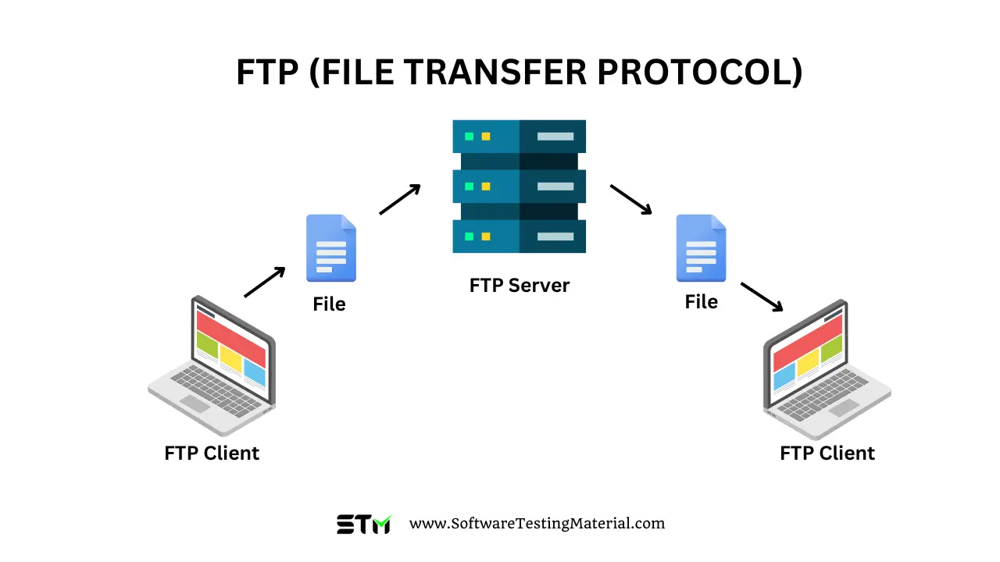

File Transfer Protocol (FTP)

What is FTP?
File Transfer Protocol is a standard set of rules for transferring files between a client and a server over a network.
Key Facts
- Developed in 1971
- Used to upload, download, and manage files on a remote server.
- Commonly used by web developers to upload website files to a hosting server.
How It Works
- The client connects to an FTP server using an FTP program or browser.
- The user logs in with a username and password.
- Uses two separate channels — one for commands, one for data transfer.
FTP vs. SFTP vs. FTPS
- FTP - Basic file transfer. No encryption — data is sent in plain text.
- SFTP - Secure File Transfer Protocol. Encrypted and secure.
- FTPS - FTP with SSL/TLS encryption added on top.